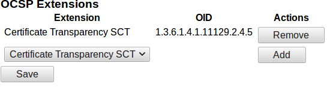

Certificate Transparency
ENTERPRISE This is an EJBCA Enterprise feature.
Certificate Transparency (CT) is an experimental Internet security standard and open source framework for monitoring and auditing digital certificates. The standard creates a system of public logs that seek to eventually record all certificates issued by publicly trusted certificate authorities, allowing efficient identification of mistakenly or maliciously issued certificates. This section covers the following:
Introduction
EJBCA implements Certificate Transparency (CT) as specified in RFC 6962. The purpose of CT is to create public audit logs of all certificates issued by the public SSL/TLS CAs. The presence of audit records is required for EV certificates in Google Chrome as of 2015 (and other web browsers and non-EV certificates to follow). Note that CT is only relevant for CAs issuing public SSL/TLS certificates, other types of CAs should not use CT. More information can be found on the Certificate Transparency website.
From a CA's point of view, CT works by publishing certificates from the CA to the log servers and retrieving Signed Certificate Timestamps (SCTs) in response. This is a single operation, so requesting an SCT for a certificate also publishes it. The resulting SCTs can then be sent to end-users in a TLS handshake in different ways: in a certificate extension, in a stapled OCSP response, and/or in a TLS extension. EJBCA supports all of these, including combinations. The following sections describe how to configure EJBCA in one or more of these modes.
Prerequisites
Your EJBCA installation needs the EJBCA Enterprise Edition only ct module. Depending on the CT modes you require, there are some extra preparations.
CT in Certificates
No extra preparations are needed. Just configure the logs and enable CT in the certificate profiles as described in the sections Adding CT Logs and Activating CT.
CT in OCSP Responses
EJBCA supports CT in OCSP responses, both in live OCSP responders and for pre-production of responses. By default, EJBCA will cache up to approximately 100 000 CT response extensions in memory. Excess cached response extensions that have not been requested for 10 seconds are randomly evicted from the cache. The parameters can be adjusted in the file conf/cesecore.properties.
To use CT OCSP you must also enable the corresponding extension in the OcspKeyBinding of the OCSP Responder:
Select Admin Web > Internal Key Bindings > OcspKeyBindings and choose the Key Binding to edit.
Under OCSP Extensions, select Certificate Transparency SCT.
Click Add and then Save.

Proceed with configuring CT logs and certificate profiles according to the sections Adding CT Logs and Activating CT.
CT in a TLS extension
In this mode, the certificate holder requests SCTs from the logs and includes them in a TLS extension. The CA is not required to do anything, but it is possible to reduce the time it takes until full (merged) audit log records are available by publishing certificates to the logs as soon as they are issued. For configuration details, see Publishing to logs without using the SCTs .
Publishing to Logs Without Using the SCTs
EJBCA can asynchronously publish certificates to one or more CT logs, using a Custom Publisher. This feature is intended to be used mainly when using CT in TLS mode or OCSP mode.
To enable publishing to logs without using SCTS, do the following:
Go to CA Functions>Publishers and add a new publisher with the following configuration:
Field
Value
Publisher Type
Custom Publisher
Class Path
org.ejbca.code.model.ca.publisher.CTCustomPublisher
Properties
Leave blank
No direct publishing, only use queue
Yes
Keep successfully published items in database
No
Use queue for CRLs
No
Use queue for certificates
Yes
Click Save.
 Note that the publisher has to be enabled in the certificate profiles before publishing becomes active.
Note that the publisher has to be enabled in the certificate profiles before publishing becomes active.Next, to create a service for the publisher, specify the following under System Functions>Services:
Field
Description
Worker
Publisher Queue Process Worker
Publishers to check
The previously created publisher.
Period
Default is 5 minutes and can be changed to several hours.
Active
Yes.
Adding CT Logs
CT log servers are configured under System Configuration. Note that the CT log servers will not be active until enabled per certificate profile.
The following parameters have to be configured in a log:
|
Field |
Value |
|
Log URL |
The log URL, for example https://ct.googleapis.com/testtube/. |
|
Public Key |
The log's public key, in PEM or DER format. Usually this is an Elliptic Curve key. |
|
Timeout |
Connection timeout in milliseconds, default 5 seconds. Note that certificate issuance and/or OCSP response generation must wait for the log server to respond, so do not set it too high. Note that zero is not a valid value for the timeout. |
|
Label |
Specify which label to place the log under. See CT Log Labels. |
The log server needs to accept certificates issued by your CAs. For local testing you can install your own instance of the sample log server from the CT open source project, and add your root CA to the list of trusted CAs. For a production system (or testing of one), you must contact the log operator to have your root CA added.
For redundancy, it is recommended to add more logs to each label than the minimum required. That way certificate issuance will not fail if a single log is down. It is also a good idea to specify a short timeout value and/or enable the ct.fastfail.enabled option in conf/cesecore.properties, so a failing log does not slow down all requests.
Regarding performance, EJBCA will connect to every log having one of the labels selected in the certificate profile, in the order they have been added and in parallel. It will keep fetching SCTs until Maximum number of SCTs is reached. EJBCA will fail issuance if it is unable to fetch at least the number of SCTs given by the parameter Minimum number of SCTs specified in the certificate profile. If the number of retrieved SCTs exceeds the max value, the log(s) last in order will be excluded.
To change the order in which the logs are contacted, reorganize the logs on the System Configuration page.
Expiration Time Based CT Logs
As part of the Google CT policy requirements for April 2018, some logs will only accept certificates expiring within a specific year.
To configure an expiration year, click Edit for the log after adding it. When configured, EJBCA will only submit to this log if the certificate expired within the year specified for the log.
CT Log Labels
It may be a requirement to publish to certain logs and a certain number of logs before issuing a certificate. For example, Google Chrome requires that all EV certificates issued after 1st of January 2015 must be published to at least one CT log operated by Google, at least one log not operated by Google, and to a certain number of logs in total, where the total amount of logs depends on the lifetime of the certificate. This is achieved by grouping logs using labels in 'System Configuration' page. All logs with the same label forms a log group. EJBCA will fail issuance unless it receives at least one SCT from each log group. Log groups are enabled/disabled by selecting/deselecting labels in the certificate profile.
The parameters Minimum number of SCTs and Maximum number of SCTs can be configured for each certificate profile, either manually or by certificate validity according to CT policy. An example setup complying to Chrome's CT policy could contain the following:
A Google logs label containing a set of logs operated by Google, and a label Unlabeled containing a set of logs not operated by Google.
A certificate profile with:
The labels Google logs and Unlabeled selected.
The parameter Minimum number of SCTs set to By validity to let EJBCA select a minimum dynamically based on Chrome's CT Policy.
The parameter Maximum number of SCTs set to By validity to only include the number of SCT's required based on Chrome's CT Policy in the certificate.
EJBCA Audit Logging
The submission of pre-certificates is logged to the EJBCA audit log. When a pre-certificate has been submitted to the required number of CT log servers, then a SUCCESS is audit logged. Otherwise a FAILURE is logged. If the generation of the pre-certificate fails, then no CT log submission is performed, and nothing is logged.
Activating CT
CT logs must be activated in your certificate profiles. For more information, see Certificate Transparency.
Redacting DNS labels in SubjectAlternativeName
In the SubjectAlternativeName extension, if part of the DNS should be a secret, that part can be redacted and replaced by the String "(PRIVATE)" in the pre-certificate that will be published to the Certificate Transparency Log. For more information, see Certificate Transparency.
Using an Outgoing Proxy Server to Send to CT Logs
For security reasons, a common request is using an outgoing proxy server from the CA to the CT logs. The CT log function uses the Java/JBoss proxy configurations and the proxy properties in JBoss can be configured in one of the following ways:
In standalone.sh append to JAVA_OPTS:
-Dhttp.proxyHost=HostName/IPaddress-Dhttp.proxyPort=PortNumber-Dhttps.proxyHost=HostName/IPaddress-Dhttps.proxyPort=PortNumber
In standalone.xml append to system-properties:
<propertyname="http.proxyHost"value="HostName/IPaddress"/><propertyname="http.proxyPort"value="PortNumber"/><propertyname="https.proxyHost"value="HostName/IPaddress"/><propertyname="https.proxyPort"value="PortNumber"/>
Ensure to reconfigure the proxy settings if you upgrade/change the JBoss instance.
Troubleshooting
Problems submitting to CT logs may be caused by a number of reasons. You may still be able to issue the certificate even if you experience issues, since EJBCA may be able to retrieve SCTs from any other logs you have configured.
TLS Session Reuse
When contacting a CT log, an HTTP POST request with a JSON payload containing the certificate chain is sent. This payload is typically about 4-6 kB large. Note that EJBCA as of version 6.11 supports TLS session reuse, allowing multiple certificate chains to be submitted over the same TLS session. Consequently, if you inspect the traffic sent between EJBCA and the CT log server you may note that the packets are substantially larger than expected. This is the expected behavior.
Connection reset
This symptom is diagnosed using log entries with "Connection reset" when submitting a certificate to CT logs as shown below:
Error making POST request to https://<log server>/ct/v1/add-pre-chain: Connection reset: java.util.concurrent.ExecutionExceptionTo troubleshoot this issue, check the following:
Some log servers require TLS v1.2 which is not supported by some older versions of Java. Java 8 uses TLS v1.2 by default. If the CT submission failed because of a TLS error, you will see something like this in the log:
Caused by: java.net.SocketException: Connection resetat java.net.SocketInputStream.read(SocketInputStream.java:196) [rt.jar:1.7.0_85]at java.net.SocketInputStream.read(SocketInputStream.java:122) [rt.jar:1.7.0_85]at sun.security.ssl.InputRecord.readFully(InputRecord.java:442) [jsse.jar:1.7.0_85]at sun.security.ssl.InputRecord.read(InputRecord.java:480) [jsse.jar:1.7.0_85]at sun.security.ssl.SSLSocketImpl.readRecord(SSLSocketImpl.java:946) [jsse.jar:1.7.0_85]at sun.security.ssl.SSLSocketImpl.performInitialHandshake(SSLSocketImpl.java:1344) [jsse.jar:1.7.0_85]at sun.security.ssl.SSLSocketImpl.startHandshake(SSLSocketImpl.java:1371) [jsse.jar:1.7.0_85]at sun.security.ssl.SSLSocketImpl.startHandshake(SSLSocketImpl.java:1355) [jsse.jar:1.7.0_85]This means the TLS handshake failed and the CT log server closed the connection.
Make sure your firewall is configured properly, e.g. allows EJBCA to send HTTPS traffic to the CT logs you are using.
To test the communication between EJBCA and the CT log server, issue the following command on the EJBCA machine:
> curl'https://<log server>/ct/v1/add-pre-chain'{"error_message":"Unable to parse request.","success":false}"Unable to parse request" means that the CT log server received your request successfully and the communication between EJBCA and the CT log server should work correctly.
HTTP 400 Bad Request
This symptom is diagnosed using log entries with "HTTP 400 Bad Request" when submitting a certificate to CT logs as shown below:
Unhandled exception when retrieving SCT for 'primekey.com' from CT log https://<log server>/ct/v1/. Error: org.certificatetransparency.ctlog.comm.LogCommunicationException: Error making POST request to https://<log server>/ct/v1/add-pre-chain: HTTP 400 Bad Request: java.util.concurrent.ExecutionExceptionTo troubleshoot this issue, check the following:
Make sure your root CA certificate is added to the CT log's truststore by the CT log operator.
To check which roots are accepted by a CT log, send a GET request to https://<log server>/ct/v1/get-roots as explained in RFC 6962, section 4.7 Retrieve Accepted Root Certificates. For more information, refer to RFC 6962.
All certificates are not accepted by all logs. In particular, some CT logs like Google's Argon logs and Cloudflare's Nimbus logs only accept certificates with a certain year for the output. When you add these logs, you should always enable "Output Limit" as explained in Expiration Time Based CT Logs. If you are unsure which certificates a particular log accepts, contact the CT log operator.
Inspect the logs and look for the JSON error message returned from the CT log server. This message is logged at INFO level as of EJBCA 6.14 and looks something like the following example:
2018-06-0113:37:00,000INFO [org.cesecore.certificates.certificatetransparency.HttpPostTimeoutInvoker] (pool-30-thread-3) Error content from CT log was: {"error_message":"Foo.","success":false}The log entry will only be written to the log if you receive an HTTP response from the CT log with an HTTP status code x, 200 ≤ x ≤ 299. That is, if the CT submission failed due to a TLS error, this message will not be written to the log.
CT log servers have built-in rate-limiting. Some rate-limiters are global and may affect you even if your submission rate is low. CT issues caused by rate-limiting can be hard to troubleshoot since errors appear sporadically and seemingly at random. If the error message from the log server contains something like "invalid request" or "rate limit" you may be a victim of rate-limiting. To make sure EJBCA can issue the certificate even if some of the CT logs are unable to fulfill your request, you should add additional log servers to your CT log configuration.